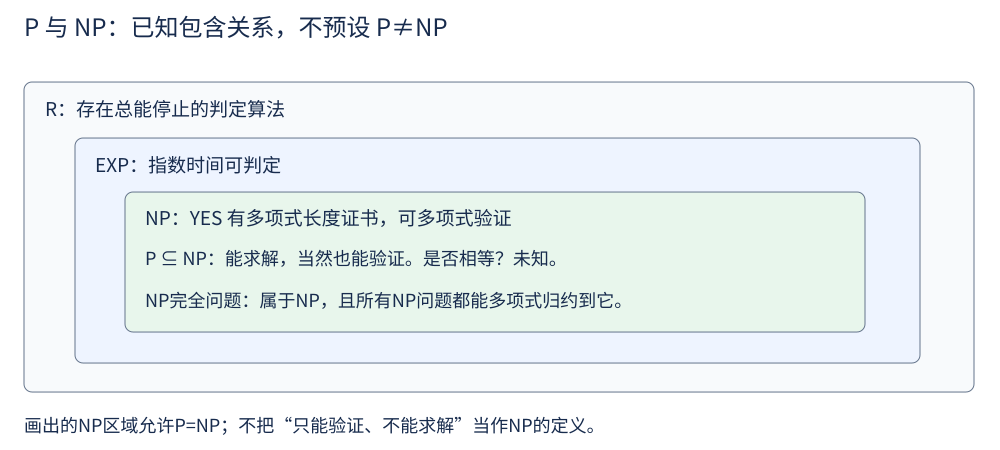
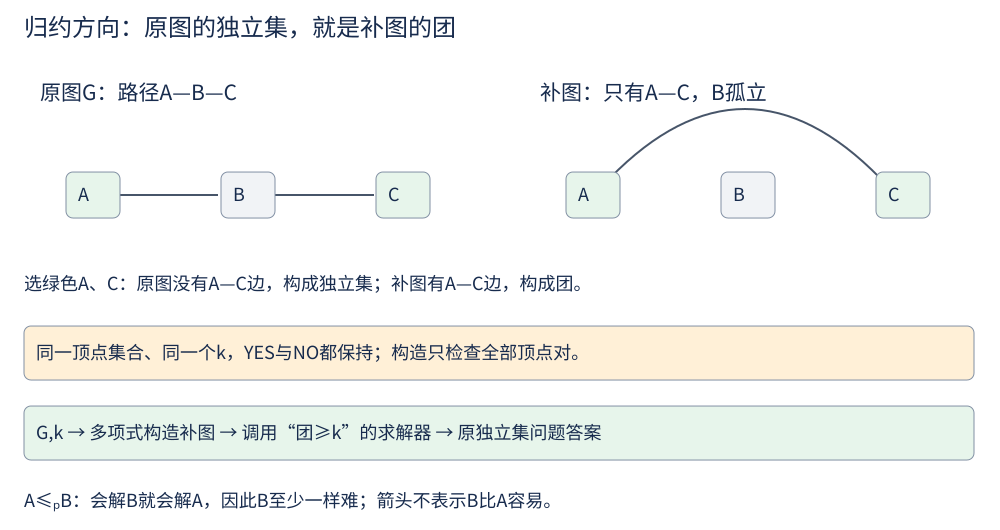

第 28 讲 · 计算复杂度与 NP¶
阅读起点：第 1 讲：规模；第 22 讲：数值与位数；第 19 讲：欧拉。
首读范围：先分清求解/验证与归约方向；不可判定、广义游戏和强弱复杂性选读。
到这里，你已经见过一整条复杂度阶梯：
对应例子依次为期望哈希查找、二分、线性扫描、比较排序、平方 DP、立方区间 DP、枚举子集、枚举排列。这里比较的是增长函数，不是把 O 记号当作严格有序的数。
但有一类问题让人不痛快：它们验证起来很容易，却至今没有人找到多项式时间的解法。
- 给定图，是否存在一条恰好经过每个顶点一次的路径（哈密顿路径）？
- 给定 100 个整数，能否挑出一些使和恰好等于目标值（子集和）？
- 给定若干逻辑子句，是否存在一组赋值让它们全部为真（SAT）？
先补上第三个问题的记号：SAT 的变量只能取真或假，¬x 表示 x 的否定，x∨y 表示至少一个为真，一组子句要求同时成立。例如 (x∨y) 与 (¬x∨y) 可以令 y 为真来同时满足；x 与 ¬x 则无法同时为真。SAT 问的是有没有可行赋值，给定一组赋值逐条检查只是验证。
换一个决策问题的角度，这些问题的共同点就清楚了。
决策问题：把输出压成是/否¶
先说明简单路径：沿路不重复经过同一个顶点。例如 A→B→C 是简单路径，A→B→A→C 不是。限制不重复很关键，否则有正权环时，可以反复绕圈让路径越来越长，便没有有限的“最长”值。
决策问题：输入要么是"YES 输入"、要么是"NO 输入"，算法只需输出 0 或 1。
很多优化问题都能改写成决策形式：不是问"最短路是多少"，而是问"是否存在长度不超过 d 的 s-t 路径"。有一张很直观的表：
| 问题 | 决策问法 |
|---|---|
| s-t 最短路 | 是否存在权重 ≤ d 的 s-t 路径？ |
| 负环 | 是否含有负权环？ |
| 最长简单路径 | 是否存在权重 ≥ d 的简单路径？ |
| 子集和 | 是否存在和为 S 的子集？ |
| 俄罗斯方块 | 给定棋子序列，能否撑过去？ |
| 国际象棋 | 给定局面，能否必胜？ |
| 停机问题 | 给定程序与输入，它会不会停？ |
先区分两件事：“算法太慢”与“没有任何总能停止并答对的程序”不是同一个结论。停机问题属于后者。完整不可判定性证明是选读；比较程序与函数的数量只能说明存在不可判定问题，不能单独证明停机问题不可判定。
先区分两个尺度。输入长度 N 指写下整个输入需要多少个比特；多项式时间是 O(N^c)，其中 c 为固定常数，N、N²、N³ 都属于这一类。输入中的一个大数值可能远大于 N，所以第 22 讲的 O(nW) 不能仅凭形式就认定是多项式。
下面的类别是按“问题有没有某种时间界的算法”划分，而不是给某一份代码贴标签。可判定问题记作 R，其中有多项式时间 P 和指数时间 EXP。⊆ 表示包含且允许相等，⊊ 表示严格包含，即右侧至少还有一些左侧没有的问题。已知 P⊊EXP⊊R，但给某个具体问题分类还要说明模型。普通固定 8×8 象棋和“棋盘大小也是输入”的广义象棋不同，不能直接把普通象棋贴成 EXP 完全。本讲后续只讨论有限输入的决策问题与多项式验证。
P 与 NP：求解容易，还是验证容易¶

P：能在多项式时间内求解的决策问题。 NP：给定一个"证书"，能在多项式时间内验证它的决策问题。
NP 只保证 YES 有可多项式验证的短证书，不要求求解困难；P 中的问题同样在 NP 中。 把每个问题的"证书"和"验证器"列出来就是这样：
| 问题 | 证书 | 验证器 |
|---|---|---|
| s-t 最短路 | 一条 s-t 路径 | 把路径上的权加起来，检查是否 ≤ d |
| 负环 | 一个环 | 把环上的权加起来，检查是否 < 0 |
| 最长简单路径 | 一条路径 | 检查它是简单路径且权重 ≥ d |
| 子集和 | 一组被选中位置的下标 | 检查下标合法、不重复，且对应数值之和为 S |
| 俄罗斯方块 | 一串操作 | 检查这些操作确实能撑过去 |
证书是输入长度的多项式长度以内的一份 YES 证明，验证器运行时间也受输入长度的多项式界定：YES 输入要存在一份能让验证器通过的证书，NO 输入则无论给什么证书都通不过。
例如子集和输入nums=[3,8,5]、目标11，证书可以是下标[0,1]。验证要检查下标合法且不重复，再加3+8得到11；给[0,0,2]即使和碰巧相等也应拒绝，因为同一位置不能重复选。验证容易不代表知道怎样找到证书；对NO输入，也不能仅凭某一份失败证书就判定所有候选失败。
把子集和的验证器写出来，就能看见它比“寻找子集”少做了什么：
def verify_subset_sum(nums, target, indices):
seen = set()
total = 0
for i in indices:
if not isinstance(i, int) or not 0 <= i < len(nums) or i in seen:
return False
seen.add(i)
total += nums[i]
return total == target
验证器只检查交来的这一份下标，不会搜索别的子集。证书最多含 n 个下标；整数相加的位成本也受输入长度的多项式界定，所以这满足 NP 的验证要求。verify_subset_sum([3,8,5],11,[0,1]) 为 True，重复使用下标的 [0,0,2] 为 False。
两个包含关系可以这样理解：
P ⊆ NP：验证器干脆忽略证书，直接把问题解出来；NP ⊆ EXP：把所有可能的证书都试一遍——证书长度是多项式级的，枚举量最多2^(n^O(1))，逐份跑验证器。
于是就有了那个著名的悬赏问题：P = NP 吗？ 绝大多数研究者相信 P ⊊ NP，也就是说"生成一个解比检查一个解更难"，但没有人能证明。这就是 P 与 NP 问题。
归约：把难度传过去¶
我们为什么关心一个问题是不是"NP 里最难的"？ 因为一旦确定它是，那么只要 P ≠ NP，它就不可能有多项式算法——这句话本身就是最强的负面结论。
而"哪两个问题一样难"是靠归约来判断的：
想解决问题 A，可以先把 A 转成问题 B，再用 B 的算法求解。这就是从 A 到 B 的归约（记作
A → B）。因为 B 能用来解 A，所以 B 至少和 A 一样难（A ≤ B）。
这个思路其实你早就在用了：把"打家劫舍"归约成"路径图上的独立集"，把"± 分配"归约成"子集和"（第 22 讲），都是"换个问题来解"。
还要留意方向：A≤B 表示“若 B 快，则 A 也快”。若要说明新问题 B 至少与已知难题 A 一样难，应把 A 的输入转换成 B；把 B 转成 A，只说明我们会用 A 的算法解 B，不能证明 B 难。正式使用的归约要求转换时间为多项式，并保持 YES/NO 答案。
NP 完全，以及面对它该怎么办¶
NP 完全：问题 X 属于 NP，且所有 NP 问题都能多项式归约到 X。
它的含义很重：这些问题的任意一个若能多项式求解，所有 NP 问题就都能——也就是 P = NP。
下面会列出一条归约关系链。其中，3-SAT 是每个子句至多含三个“文字”的 SAT，文字指变量或它的否定；独立集要求所选顶点两两不相邻，团要求两两相邻；顶点覆盖要求每条边至少有一个端点被选中；旅行商的决策版问是否有一条访问所有城市一次并回到起点、总费用不超过给定预算的路线。链中的箭头表示已有多项式归约，不是凭题目相似性得出的结论。
第一个被证明是 NP 完全的是 SAT（1971 年，Cook–Levin 定理），它成了整条归约链的源头：
那工程上遇到这类问题怎么办？ 学术上的答案是"别指望多项式精确算法"，实践中通常走这四条退路：
| 退路 | 做法 | 例子 |
|---|---|---|
| 缩小规模 | 分支限界、剪枝、折半枚举，把指数控制在能接受的范围 | 数独、N 皇后 |
| 利用特殊结构 | 在特定输入上找多项式算法 | 图是树时，很多 NP 完全问题变简单 |
| 近似算法 | 求一个"保证离最优不超过 c 倍"的解 | 顶点覆盖有 2-近似算法 |
| 伪多项式 DP | 数值范围有限时用 DP | 背包的 O(nW)（第 22 讲） |
"伪多项式"这一条解释了一个常见的困惑：为什么"子集和是 NP 完全的"和"我们有 O(nT) 的 DP"不矛盾？因为 O(nT) 依赖的是 T 的数值，而 T 在输入里只占 log T 个比特——T 很大时，这个算法相对于输入长度就是指数级的。
所以在面试里被问到"子集和是不是 NP 完全"，一个准确的回答是："它是 NP 完全的，但有 O(nW) 的伪多项式 DP；当数值被输入长度的多项式界定时，这个 DP 才成为多项式时间。"
几组"只差一点点"的对照¶
以下按对应的决策形式讨论 P 与 NP 完全，例如最短路问“是否存在代价≤d 的路径”，最长简单路径问“是否存在长度≥d 的简单路径”。
这个系列里反复出现过“看起来很像、难度却天差地别”的成对问题。记住这张表，能帮你快速判断一个新问题该往哪个方向找算法：
| 容易（P） | 难（NP 完全） | 差在哪 |
|---|---|---|
| 欧拉路径（每条边走一次） | 哈密顿路径（每个顶点走一次） | 边 vs 顶点 |
| 2-SAT | 3-SAT | 每个子句 2 个文字 vs 3 个 |
| 最短路 | 最长简单路径 | 在非负权图中，最短路总可选成不重复顶点的路径；改为最大化这种路径的长度后，一般情形就困难得多 |
| 二分图匹配 | 3 维匹配 | 三元组选择，不是普通一般图匹配；普通一般图匹配也有多项式算法 |
| 最小生成树 | 图上的斯坦纳树（决策版） | MST 要覆盖全部顶点；斯坦纳树只要求连接给定终端，可选择使用图内其他顶点 |
| 容量被输入长度的多项式界定的背包 | 二进制数值无界的背包决策版/划分 | 前者可用 DP；一般版本同样可为 NP 完全 |
其中第一组最值得盯着看。欧拉路径的判据是"每个顶点的度数"（第 19 讲）——这是局部信息，检查一遍 O(V+E) 就完了；哈密顿路径没有任何已知的简单判据，因为"每个顶点恰好一次"是全局的组合条件。这是结构差异的例子，不能推广为“局部约束都容易”；3-SAT 每个子句只涉及 3 个文字，仍可 NP 完全。
归约长什么样：两个例子¶
要证明一个归约成立，需要两件事：(a) 转化本身是多项式时间的；(b) 两个问题的答案一致（"A 有解 ⟺ B 有解"）。

例子一：独立集 → 团。 决策版本还要给一个门槛 k：原图能否选出至少 k 个互不相邻的顶点？转换后问补图能否选出至少 k 个两两相邻的顶点，k 保持不变。
独立集：选最多的顶点，使任意两点都不相邻。 团：选最多的顶点，使任意两点都相邻。
做法是把图 G 的补图（有边变没边、没边变有边）交给"团"的算法。证明只有两句话：构造补图要看所有 O(V²) 对顶点，是多项式的；而 S 是 G 的独立集 ⟺ S 中任意两点在 G 中不相邻 ⟺ S 中任意两点在补图中相邻 ⟺ S 是补图的团。∎ 同一补图操作也能反向把团转为独立集，因此二者可互相多项式归约。
例子二：子集和 → 划分。 子集和输入一列数和目标 S，问能否选出和为 S 的位置子集；划分则输入一列数，问能否把所有位置分成和相等的两组。下面要把前一种输入构造成后一种，使答案一致。
约定输入都是非负整数，令总和 U，目标 S。若 S<0 或 S>U，直接映射到固定无解实例 [1]；其余情况添加一个数 x=|U−2S|。
- 若 S≤U/2，加入后总和为
2(U−S)，一半为 U−S。划分中包含 x 的一侧，去掉 x 后，原数之和为(U−S)−(U−2S)=S。 - 若 S>U/2，加入后总和为 2S，不含新增 x 的一侧必由原数凑出 S。
例如 nums=[3,8,5]、S=11，总和 U=16，新增 x=|16−22|=6。原来选择 3+8=11，对应新数组分为 [3,8] 与 [5,6]，两组都为 11；反过来，任意平分中不含新添 6 的那一组，就是原数组和为 11 的子集。
反向也成立：若原数有子集和 S，把其他原数与新增 x 放到适当一侧，就得到平分。S=U/2 时 x=0，可省略。构造只添加一个位数为 O(log(U+1)) 的数，求和与构造的位成本对输入长度是多项式。
折半枚举：面对指数级问题的一个实用招数¶
同一个问题，输入结构一变，难度可能完全不同。以子集和为例：
| 输入特点 | 算法 | 复杂度 |
|---|---|---|
| 数值都很小（总和 ≤ 10⁵） | 背包 DP | O(nW)，实际很快 |
| 数值很大但 n ≤ 20 | 枚举子集 | 2ⁿ |
| 数值很大但 n ≤ 40 | 折半枚举 | 2^(n/2) |
| 数值很大且 n 很大 | 没有已知多项式算法 | —— |
折半枚举（meet in the middle）把数组分成两半，分别列出各自所有子集和，再找两边能否各取一个和，合计为目标。任何原数组子集都唯一分成“左边选了哪些、右边选了哪些”，因此这种拆分不会漏解。
例如 [3,8,5]、目标 11，左半 [3] 的和为 [0,3]，右半 [8,5] 的和为 [0,8,5,13]。查到左和 3 时，只需在右边找 11−3=8，就知道有解。这正是第 3 讲“查补数”的思路，只是候选从单个元素换成了半边子集和。
生成一半的子集和时先有空集的 0；每读入 x，旧和表示“不选 x”，旧和各加 x 表示“选 x”。合在一起就是新列表。最后函数只返回是否存在，并不恢复所选下标：
def subset_sum_mitm(nums, target):
"""折半枚举：n <= 40 左右可行"""
def all_sums(arr):
sums = [0]
for x in arr:
sums += [s + x for s in sums]
return sums
mid = len(nums) // 2
left, right = all_sums(nums[:mid]), all_sums(nums[mid:])
right_set = set(right)
return any(target - s in right_set for s in left)
复杂度从 2ⁿ 降到 2^(n/2)，n = 40 时完全可行。它的启发是：面对指数级问题，把指数从 n 降到 n/2 会显著减少枚举量；时间与空间仍是指数级，Python 中百万级大整数集合也需留出内存预算。
一张“全书复杂度”的底表¶
下面按增长阶整理已经学过的算法。数组题 n 通常是元素数；图遍历的线性规模应取 V+E；双串表在两个串长度均为 n 时才写成 O(n²)。P、NP、NP 完全是问题类别，与单个算法的时间表达式是不同层次的概念。
| 类别 | 含义 | 例子 |
|---|---|---|
| O(1) | 常数 | 哈希查找（期望）、栈操作 |
| O(log n) | 对数 | 二分、快速幂、平衡树操作 |
| O(n) | 线性 | 扫描、BFS/DFS、单调栈 |
| O(n log n) | 线性对数 | 排序（也是比较排序的下界） |
| O(n²) | 平方 | 3Sum、双串等长时的编辑距离、回文区间 DP |
| O(n³) | 立方 | 矩阵链乘、Floyd–Warshall、戳气球 |
| O(2ⁿ) | 指数 | 枚举子集、回溯 |
| O(n!) | 阶乘 | 枚举排列、N 皇后 |
| 伪多项式 | O(nW) |
背包、子集和（依赖数值大小） |
| P | 多项式时间可解的决策问题 | 最短路阈值、最大流阈值、欧拉路径是否存在 |
| NP | 多项式时间可验证 | 哈密顿路径、SAT、子集和 |
| NP 完全 | NP 中最难的一批 | SAT、3-SAT、哈密顿路径、TSP 决策版 |
它在题库里长什么样¶
LeetCode 里有一批"形式上有指数级的味道，但规模小到可以用朴素算法"的题：
| 题目 | 为什么"看着难" | 实际做法 |
|---|---|---|
| N-Queens | 要枚举所有摆法 | n ≤ 9，回溯 + 剪枝足够 |
| Word Search II | 网格上的多模式匹配 | Trie 剪枝把指数压到可接受 |
| Partition to K Equal Sum Subsets（698） | 划分问题是 NP 完全的 | n ≤ 16，回溯 + 强剪枝 |
| Matchsticks to Square（473） | 同上 | 回溯 + 剪枝 |
| Partition Equal Subset Sum（416） | 伪多项式 | DP O(nW) |
| Reconstruct Itinerary | 看着要枚举所有走法 | 欧拉路径是 P 的（第 19 讲） |
这组对照很有教育意义：416 与 698 看着像同一道题（都是"把数组分成和相等的部分"），但一个用 DP、一个用回溯——因为 416 只分两份且有数值范围约束，698 要分 k 份、约束也不同。选哪种算法取决于具体约束，而不是问题的表面相似度。
从讲义走到代码¶
遇到通用难题时，还可利用小输入、特殊结构、有限数值范围或近似要求来选择实现。
先做 Subsets：从 [[]] 开始，每加入 x，就把现有每个子集复制一份并加上 x；[1,2] 应得到 4 个子集。这里按元素位置选取，n 个元素共有 2ⁿ 个选择。
再用 subset_sum_mitm([3,8,5],11) 得 True、目标 7 得 False；向 verify_subset_sum 提交 [0,1] 验证 11。分别观察“枚举寻找”“折半寻找”“检查给定证书”各做了哪些工作，别把验证器误当成求解器。
练习¶
1. 为什么 P ⊆ NP 显然成立？
一个问题如果能多项式求解，给定任意输入直接算就行——这就是一种验证：证书可以是空的，验证器就是那个求解算法。所以 P 里的问题都在 NP 里。
2. 为什么"程序只有可数无穷多个，而问题有不可数无穷多个"能推出"大多数问题无解"？
程序可以编号（每个程序是有限比特串），所以数量是可数无穷；而"问题"是从输入到 0/1 的函数，数量是不可数无穷。用一个对角线论证就能造出一个"任何程序都算不对"的问题。所以像停机问题那样不可判定的问题不是特例，而是绝大多数——我们平时遇到的问题之所以能解，是因为它们有结构。
3. 如果某天有人证明了 P = NP，会发生什么？举两个具体影响。
其一，密码学基础动摇：RSA 等公钥体制依赖"大整数分解很难"，整数分解是搜索问题，相关判定形式可放入 NP，并可借助多项式判定反复定位因子；P = NP 意味着存在多项式时间的分解算法。其二，许多具有短证书的组合优化问题将存在多项式精确算法。但多项式也可能有很高次数或巨大常数，因此不自动意味着工业规模可用；要进一步分析实际代价。这些影响是条件推论，不能代替 P 与 NP 是否相等的证明。
4. 区分"NP 难"与"NP 完全"。
NP 完全 = 属于 NP 且 NP 难。 NP 难只要求"所有 NP 问题都能归约到它"，不要求它自己属于 NP。例如"旅行商问题的最优值"这个优化形式不是决策问题、不直接适用 NP 对决策语言的定义；验证一条路线的成本容易，认证它是全局最优是另一项任务，所以它只是 NP 难，不是 NP 完全。
5. 为什么"欧拉路径是 P、哈密顿路径是 NP 完全"这件事特别有意思？
两个问题的表述只差一个词（"每条边" vs "每个顶点"），难度却天壤之别。欧拉路径有“连通性+度数”这一组充分必要条件；哈密顿路径没有这样的已知高效通用算法。局部/全局的直觉不能替代复杂度证明。这是整个算法理论里最令人印象深刻的一组对照。
6. 为什么子集和既是 NP 完全的，又有 O(nW) 的 DP？
因为它是弱 NP 完全的。O(nW) 里的 W 是目标和的数值，输入中只占 log W 个比特；当数值很大时，O(nW) 相对于输入长度就是指数级的。“强 NP 完全”通常用于含数值参数的问题：即使把这些数值限制在输入长度的多项式范围，问题仍 NP 完全。若 P≠NP，这类问题就不存在通常形式的伪多项式算法。3-SAT 与哈密顿路径没有需要靠巨大整数表达的数值参数，也不能用压低数值范围化简。
7. 判断下面这些问题的类别，并说出该用什么算法：无向图连通性；非负权最短路；有向图判环；"和为 S 的子集个数"（S ≤ 10⁵）；TSP 的决策版；欧拉路径；"把数组分成 k 个和相等的子集"（n ≤ 16）。
| # | 问题 | 类别 | 算法 |
|---|---|---|---|
| 1 | 无向图连通性 | P | BFS/DFS 或并查集，O(V+E) |
| 2 | 非负权最短路 | P | Dijkstra，O(E log V) |
| 3 | 有向图判环 | P | 拓扑排序或 DFS 回边检测 |
| 4 | 和为 S 的子集个数 | 计数问题，不能直接贴 P/NP 决策标签 | 0/1 背包计数，O(nS) |
| 5 | TSP 决策版 | NP 完全 | 规模小时用回溯 / 状压 DP O(2ⁿn²) |
| 6 | 欧拉路径 | P | Hierholzer，O(E) |
| 7 | 分成 k 个等和子集 | 一般决策版 NP 完全；n≤16 是此处求解范围 | 规模小时用回溯 + 强剪枝 |
这张表本身就是一次复习：先看问题的"结构"（图？序列？区间？），再看它的"难度类别"，最后才决定用什么算法。
8. 面试官说"数据规模 n ≤ 20"，你会怎么判断该用什么算法？
n≤20 提示可以估算 2ⁿ 类算法，但不表示所有指数或阶乘算法都可行（2²⁰ ≈ 10⁶）。可考虑回溯枚举子集；枚举所有排列是 20!，不能由 2²⁰≈10⁶ 推出它可行。也可考虑状压 DP（用一个整数的每一位表示"某个元素是否被选/访问"），复杂度通常是 O(2ⁿ · n) 或 O(2ⁿ · n²)。
反过来，看到 n ≤ 10⁵ 就基本可以排除任何含 2ⁿ、n! 的做法，可先估算 O(n) 或 O(n log n) 做法；是否还能接受 O(n√n)，要计算实际工作量与限制。"看数据规模猜算法"是刷题和面试里最实用的一条经验。
收个尾¶
回过头看，这一套讲义其实一直在重复同一个套路：先给一个朴素想法，指出它卡在哪里，然后让关键的那个观察出现——可能是"换个问法"（背包从"选哪些"变成"容量是多少"），可能是"换个顺序"（区间 DP 从枚举第一个变成枚举最后一个），也可能只是"少做一次乘法"（Karatsuba）。观察一旦出现，算法、证明、复杂度就都顺着流出来了。
如果每一讲的习题你都动手做过一遍，那么面对一道新题，你应当能给出四样东西：一个正确的算法、一句清楚的思路、一个准确的复杂度、以及"为什么它对"的理由。